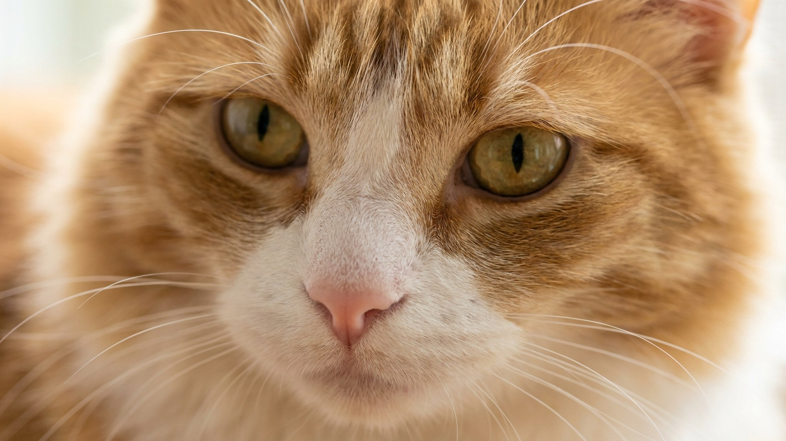

Включается душ, и кошка испаряется из ванной. Брызнула вода с раковины: шипение, прыжок, обиженный взгляд с дивана. При этом в интернете полно видео, где кошка сама залезает в ванну с хозяином. Так кто из них «неправильный»? Ни один. За реакцией на воду стоит несколько конкретных причин, и все они логичны.
🐾 У вашей кошки так же?
Расскажите в AnimaLife, как ведёт себя ваш питомец, — приложение объяснит причину и даст пошаговый план. Бесплатно, без записи к специалисту.
Разобрать свой случай → Разобрать в MAX →
У вас iPhone? AnimaLife есть в App Store
Предки домашней кошки жили в засушливых регионах: Северная Африка, Ближний Восток. Крупных водоёмов там почти не было. Кошки тысячелетиями обходились без купания в реках, и эволюция не отработала в них ни умения, ни желания мокнуть. Это первая причина.
Вторая причина физическая. Шерсть кошки намокает быстро и сохнет медленно. Намокшая шерсть тяжелеет, прилипает к телу, нарушает терморегуляцию. Для животного с рабочей температурой тела около 38-39 градусов это реальный дискомфорт, а не каприз.
Третья причина психологическая. Кошки плохо переносят ситуации, которые выбивают их из контроля. Мокрая шерсть, скользкий пол, ограниченное пространство ванны, шум льющейся воды. Всё это разом. Стресс здесь почти неизбежен, особенно если кошку никогда не приучали к воде постепенно.
Четвёртая причина проще всего: кошку просто не знакомили с водой в котячьем возрасте. Если до 12-16 недель котёнок не видел текущей воды, не слышал шума крана, не трогал воду лапой, вероятность страха во взрослом возрасте резко растёт. Это вопрос социализации, а не характера.
Три породы упоминают чаще всего: турецкий ван, мейн-кун и бенгал. У турецкого вана тяга к воде настолько устойчива, что его называют «плавающей кошкой»: порода веками жила рядом с озером Ван в Турции. Мейн-куны исторически жили на фермах у рыбаков в Новой Англии и часто плещутся в мисках или кранах. Бенгалы унаследовали часть повадок дикого азиатского леопарда, который воду не избегает.
Но порода тут не единственный фактор. Кошка любой породы, которую с котячьего возраста аккуратно знакомили с водой, реагирует на неё куда спокойнее однопомётника, которого от воды всегда прятали.
Почти каждый хозяин замечал: кошка пьёт из крана охотнее, чем из миски. Это не каприз. Инстинктивно кошка считает текущую воду более свежей и безопасной, чем стоячую. В дикой природе стоячий водоём мог быть заражён. Текущий ручей считался безопасным. Рефлекс сохранился.
Кроме того, поверхность воды в миске плохо заметна кошке: у неё слабовато работает зрение на близком расстоянии, и она нередко промахивается лапой. Текущая струя видна и слышна.
Резкое погружение в воду закрепляет страх навсегда. Работать нужно постепенно.
Важный момент: взрослую кошку, у которой страх уже закрепился, не нужно переучивать насильно. Если мытьё не требуется по ветеринарным показаниям, лучше оставить её в покое. Сухой шампунь или влажные салфетки для кошек справятся с большинством бытовых ситуаций.
Здоровая кошка моет себя сама по несколько раз в день. Купание ей не нужно в обычных обстоятельствах. Мыть стоит, если кошка испачкалась чем-то, что нельзя слизывать, если длинная шерсть сильно свалялась или если это требование ветеринара перед процедурой.
Профилактическое купание «для чистоты» раз в месяц не приносит пользы, но создаёт стресс. Кожа кошки не нуждается в частом мытье с шампунем: натуральный защитный слой смывается, и восстанавливается он долго.
🐾 Хотите понять, что кошка говорит вам?
Опишите ситуацию или пришлите видео в AnimaLife — AI разберёт поведение вашего питомца и подскажет, что делать. Бесплатно, ответ за минуту.
Разобрать поведение → Разобрать в MAX →
У вас iPhone? AnimaLife есть в App Store
🐾 Понравился разбор?
Подпишитесь на канал — каждый день разбираем по одному тревожному симптому у кошек и собак: что в пределах нормы, а когда пора к врачу. Подпишитесь, чтобы не пропустить разбор, который может спасти здоровье вашего питомца.
Материал носит информационный характер и не заменяет очную консультацию ветеринара.